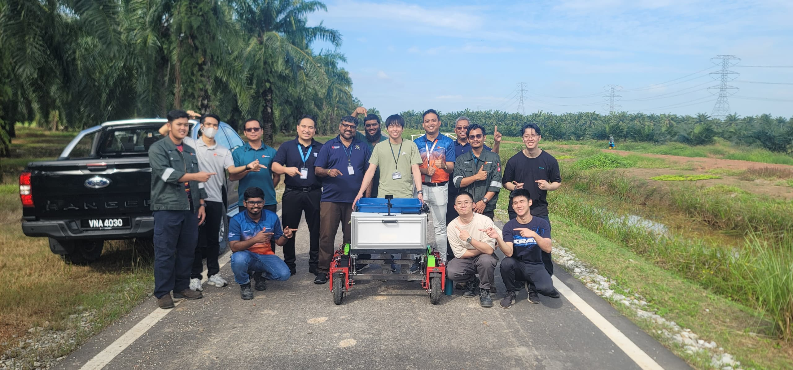
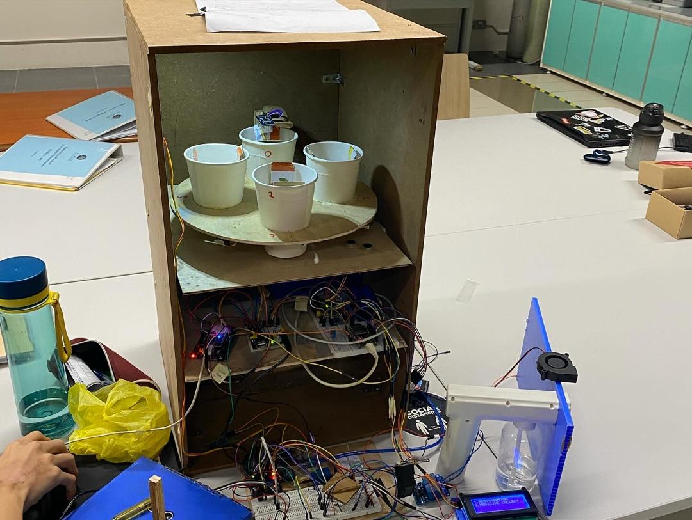

TAN CHUN PAN
I am a final-year Mechatronic Engineering student at APU, actively seeking an opportunity to enhance my path towards becoming an engineer and contribute to society. I am a tech enthusiast that is goal-driven, thrive in collaborative settings, and possess multiple technical skills. I am passionate in exploring new idea and concept.
About Me
Skills
Language
Expertise
Education & Certifications
Bachelor's Degree in Mechatronic Engineering
Science Stream + Accounting
Experience
Signify Malaysia (formerly known as Philips Lighting)
Hands-on experience with lighting system commissioning and troubleshooting, focusing on projects like Interact Hospitality and NatureConnect. I collaborated with engineers and subcontractors to ensure smooth project execution, performing on-site tasks such as testing and configuring systems for client presentations. Additionally, I assisted in technical demonstrations and system installations at multiple sites, gaining valuable insights into project coordination, technical problem-solving, and workflow management. This experience strengthened my technical knowledge and enhanced my communication skills in a professional environment.
APU Blockchain & Cryptocurrency Club
I volunteered as an event crew member for my university's Blockchain Club, where I took on various responsibilities to support our club's objectives. This included managing our booth during events, where I handled merchandise sales and participants registration.
Reference
Ir. Dr. Lawrence Soon Kian Lun
lawrence.soon@apu.edu.my
Phone: 017-536-8289
Email: soonkianlun@apu.edu.my
My Portfolio

PalmVision V1
A collaborative robotics project with Katapult Asia, MRANTI and industry mentors, aimed at automating data collection and assistive transport in palm oil fields. Designed for ripeness analysis and yield optimization, it features 4WD skid steering, modular mounting, and an Intel NUC-powered navigation system.
As the Data Collection Lead, I developed scripts to utilize mapping results for efficient video data acquisition, ensuring accurate metadata storage for ripeness analysis and yield prediction. I also designed navigation algorithms to optimize tree scanning and data logging.

Automated Pill Dispenser System
Designed and developed a healthcare automation system for medication management. Ensured accurate dispensing, inventory monitoring, and quality control for optimal drug storage. Integrated security measures for patient identification and data protection.
I contributed to the security management system, integrating an ESP32-CAM-based surveillance module with remote pan-and-tilt functionality for real-time monitoring. Designed a motion-triggered anti-theft system using an accelerometer to detect unauthorized movement, activating a high-decibel alarm.
Program Learning Outcomes Assessment
The table below shows my performance against each of the 12 Program Learning Outcomes (PLOs) of my engineering program, with scores ranging from 0 to 1 (where 1 represents full achievement).
| PLO | Score |
|---|---|
| PLO1 | 1.00 |
| PLO2 | 0.71 |
| PLO3 | 1.00 |
| PLO4 | 0.75 |
| PLO5 | 0.80 |
| PLO6 | 1.00 |
| PLO7 | 1.00 |
| PLO8 | 1.00 |
| PLO9 | 1.00 |
| PLO10 | 1.00 |
| PLO11 | 1.00 |
| PLO12 | 1.00 |
PLO Performance Visualization
SWOT Analysis
Based on my PLO assessment scores, I have conducted a SWOT analysis to identify my strengths, weaknesses, opportunities, and threats as an engineering professional.
Strengths
- Strong Fundamental Knowledge (PLO1): Perfect score in applying principles of Mathematics, Science and Engineering to solve complex problems.
- Innovative Solutions (PLO3): Excellent ability to design innovative solutions for complex engineering problems.
- Professional Practice (PLO6): Strong understanding of safety, health, social, cultural, and legal responsibilities in engineering practice.
- Sustainability Consciousness (PLO7): Excellent grasp of sustainable development and environmental considerations in engineering solutions.
- Professional Ethics (PLO8): Strong ability to execute responsibilities professionally and ethically.
- Teamwork (PLO9): Excellent ability to function effectively in teams and multi-disciplinary settings.
- Communication Skills (PLO10): Strong ability to communicate effectively and professionally.
- Entrepreneurship & Management (PLO11): Excellent project management and economic decision-making abilities.
- Lifelong Learning (PLO12): Strong commitment to continuous professional development.
Weaknesses
- Problem Analysis (PLO2): Lower score (0.71) in undertaking complex engineering problem analysis.
- Research Skills (PLO4): Room for improvement (0.75) in investigating problems using research techniques.
- Technical Tools (PLO5): Need for growth (0.80) in selecting and using suitable tools and techniques.
Opportunities
- Advanced Problem Analysis: Enhancing analytical skills through specialized courses or workshops in engineering problem analysis methodologies.
- Research Experience: Engaging in research projects or internships to strengthen investigative skills and research techniques.
- Technical Proficiency: Learning new engineering tools and software to broaden technical capabilities and efficiency in problem-solving.
- Interdisciplinary Collaboration: Leveraging strong teamwork and communication skills to engage in cross-disciplinary projects.
- Innovation Leadership: Utilizing strengths in innovation (PLO3) combined with entrepreneurship skills (PLO11) to lead innovative engineering initiatives.
Threats
- Analytical Challenges: Complex problems requiring advanced analytical skills might be challenging due to weaknesses in PLO2.
- Research-Heavy Projects: Projects demanding extensive research methodology knowledge might present obstacles due to limitations in PLO4.
- Technological Evolution: Rapid changes in engineering tools and techniques could widen the gap in technical proficiency (PLO5).
- Competitive Job Market: Engineers with stronger analytical and research skills may have competitive advantages in specialized positions.
Conclusion & Development Plan
My PLO assessment reveals a strong engineering foundation with exceptional performance in 9 out of 12 program outcomes. I demonstrate excellence in applying fundamental engineering principles, designing innovative solutions, professional practice, sustainability awareness, ethics, teamwork, communication, project management, and commitment to lifelong learning.
However, there are three areas requiring further development: complex problem analysis (PLO2), research techniques (PLO4), and technical tool proficiency (PLO5). These areas represent critical skills for advanced engineering practice and should be the focus of my professional development efforts.
Development Plan
- Enroll in advanced courses or workshops focused on engineering analysis methodologies and critical thinking.
- Seek research opportunities or projects that require systematic investigation and application of research methods.
- Dedicate time to learning and mastering additional engineering tools and software through certified training programs.
- Pursue mentorship from experienced engineers who excel in analytical and research-oriented engineering work.
By capitalizing on my numerous strengths while strategically addressing the identified weaknesses, I can develop into a more well-rounded engineer with comprehensive capabilities across all program learning outcomes. This balanced approach will enhance my professional versatility and prepare me for increasingly complex engineering challenges throughout my career.